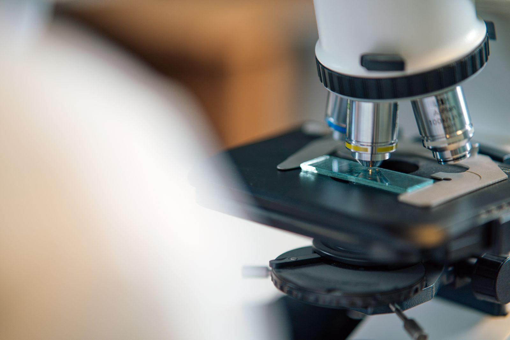
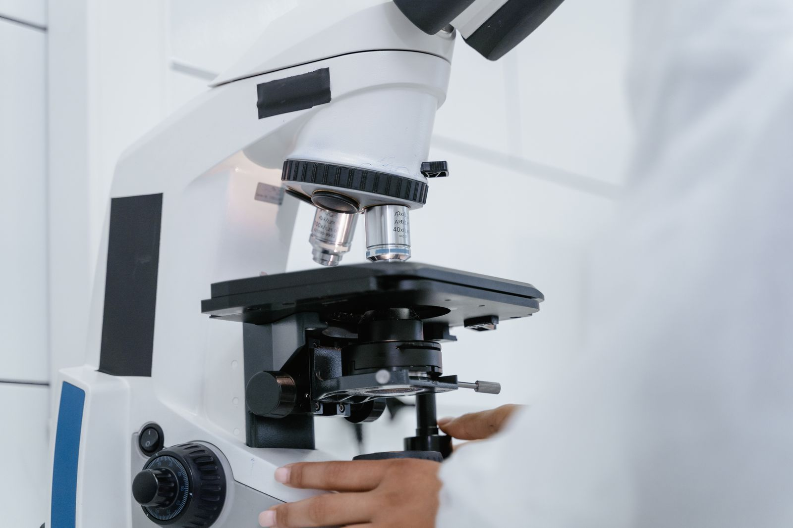

Thin-Film Deposition for Optical & Materials R&D
A flexible research platform for the next experiment, and the one after that. Configurable deposition platforms for researchers in optical materials, optoelectronics, nanophotonics, sensors and functional coatings.



Research laboratories need deposition equipment that can evolve with their work.
i-Photonics provides configurable thin-film deposition platforms for researchers working in optical materials, optoelectronics, nanophotonics, sensors, functional coatings and process development.
Dymek helps you choose and configure the right platform, then installs and supports it locally.
Research areas supported
Configured to deliver precise layer control across a broad range of scientific disciplines and emerging technologies.
- Optical and functional thin films01 · Optical
- Optoelectronic devices02 · Optoelectronics
- Nanophotonics03 · Nanotech
- Optical sensors04 · Sensors
- Transparent conductive coatings05 · Conductive
- Dielectric and metallic layers06 · Materials
- Laser and infrared optics07 · Lasers & IR
- New coating-material development08 · R&D synthesis
- Pilot and technology-transfer processes09 · Scale-up
Configurable deposition systems

PIAD for flexible optical coating research
The Ortus platform combines electron-beam evaporation with Plasma Ion-Assisted Deposition (PIAD). Plasma assistance provides additional control over film growth and properties compared with conventional evaporation, while retaining the material flexibility researchers value in an evaporation platform.
Ortus 700 highlights: the compact Ortus 700 is specifically optimised for R&D and small-scale production, with configurable substrate holders, evaporation sources, plasma/ion assistance and optical process monitoring.
Potential applications include VIS and IR optics, laser optics, sensors and complex optical coatings.

Magnetron sputtering toward scale-up
For researchers developing sputtered functional films, Astra-S provides a laboratory-scale magnetron sputtering platform. Its design is unusual in one useful respect: i-Photonics developed Astra-S to reproduce conditions similar to larger inline coating systems, allowing process development at laboratory scale with a path toward small-scale or production equipment.
Modular capabilities: the modular system can incorporate DC, AC or RF magnetron sputtering, ion or plasma cleaning and optical monitoring.
Bridge the gap between initial laboratory synthesis and industrial-scale production line parameters.
See the ORTUS in action.
A short film from i-Photonics on e-beam evaporation with plasma ion-assisted deposition.

ORTUS coating system · film by i-Photonics
Build around the research.
A useful system discussion starts with your scientific objectives rather than off-the-shelf equipment limitations. The goal is not simply to configure today's experiment, but to build a platform with room for tomorrow's research.
Answer these with Dymek- What materials do you want to deposit?
- What substrates and dimensions do you need to accommodate?
- Which film properties are most important?
- Will optical monitoring be required?
- Could the process eventually move toward pilot production or technology transfer?